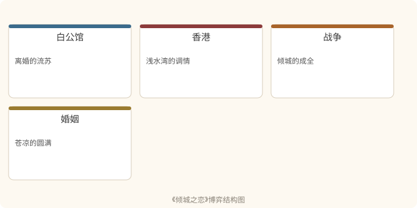

倾城之恋
一、基本信息
| 作者 | 张爱玲 |
|---|---|
| 成书/出版 | 1943年（作者页 B111 口径：倾城之恋（1943）） Zhang Ailing (Eileen Chang) — Encyclopaedia Britannica（百科全书） |
| 国别/地区 | 中国 |
| 时代 | 现当代 · 现代 |
| 体裁 | 中篇小说 |
| 语言 | 汉语（白话） |

《倾城之恋》博弈结构图（主题·结构图）
二、创作背景
作者页（B111）：张爱玲 major_works 载'倾城之恋（1943）、半生缘（1968）'（B111 作者页定位，详见 jinsuoji 条核对）。
张爱玲为海派文学的现代高峰（作者页 B111 定位——与王安忆'传人'说互证，见 changhenge 条）。
三、内容脉络
离婚的白流苏与范柳原：香港的算计与调情（通说）。
香港之战成全婚姻——'倾城'的反讽（通说待核）。
四、主要人物表
| 人物 | 身份 | 说明 |
|---|---|---|
| 白流苏 | 离婚女子 | 以婚姻为生计（通说） |
| 范柳原 | 浪子 | '执子之手'的戏言（通说待核） |
五、主题与艺术特点
- '倾城'的反讽：文明倾覆成全私情（通说）。
- 算计与真心的博弈（通说）。
- 苍凉的手势（作者美学——通说待核）。
六、影响与评论
- 作者页：张爱玲代表作谱系（B111 作者页口径）。
Zhang Ailing (Eileen Chang) — Encyclopaedia Britannica（百科全书） - 多次影视改编（1980年代电视剧与2009年电影——通说待核）。
Zhang Ailing (Eileen Chang) — Encyclopaedia Britannica（百科全书）
七、阅读建议
难点
- 沪港双城的空间。
- 张氏比喻的密度。
- 《倾城之恋》（北京十月文艺出版社《张爱玲全集》，通说待核）。
对照《金锁记》：张爱玲的两种笔调。
八、待核实
- 首发（《杂志》1943年说）核对。
- 白流苏/范柳原情节核对。
- 结尾'胡琴'意象待核。
本页主要来源
张爱玲的其他收录作品：金锁记